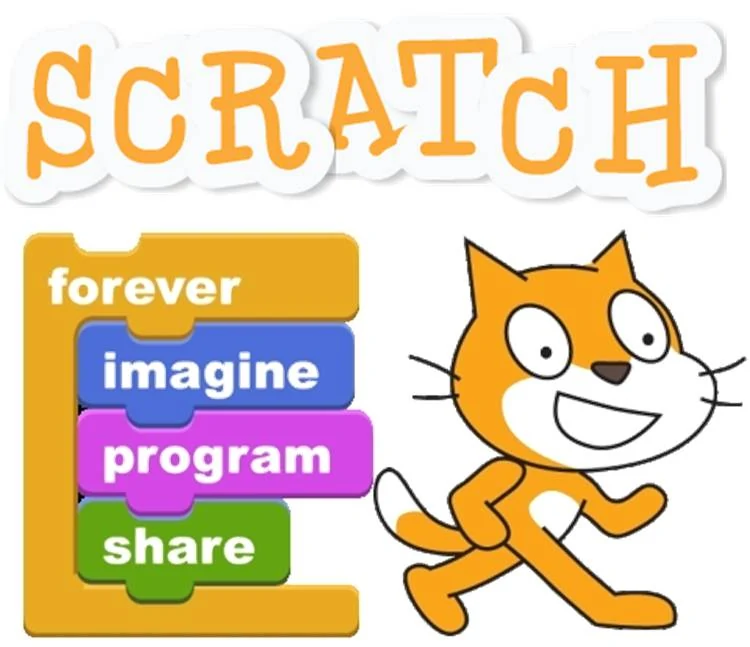

Informácie pre rodičov o Scratchi
Milí rodičia, zoznámte sa so Scratchom. Scratch je veselý kocúr, ktorý vaše deti prenesie do sveta fantázie, animácie a príbehov. A to vo veľmi jednoduchom a prívetivom prostredí programovacieho nástroja s rovnomenným názvom. Scratch bol vytvorený tak, aby bol ľahko ovládateľný deťmi, a to aj bez znalosti akýchkoľvek programovacích nástrojov. Deti jednoducho skladajú bloky príkazov v podobe príkazových "kociek" a každé spustenie programu potom vykoná pripravenú sadu inštrukcií. Deti tak veľmi rýchlo pochopia princípu využívania tohto nástroja a okrem toho, že sa učia kreatívnou formou pracovať s počítačom, naučia sa dôležité stratégie pre riešenie problémov, navrhovanie projektov a vyjadrovanie myšlienok.
Vďaka Scratchu si deti môžu jednoducho vytvárať vlastné animácie, príbehy a hry. Pri ich tvorbe sa naučia kreatívne myslieť a spolupracovať s ďalšími kamarátmi. Práve učenie prostredníctvom kreatívnej tvorby hier a interaktívnych animácií deti vtiahne do deja a budú skúšať nové prístupy a možnosti.
Pozrite si stránku Ako jednoducho začať so Scratchom.

Ako naučiť deti Scratch
Je množstvo spôsobov ako naučiť deti práci so Scratchom. Samozrejme je možné deti prihlásiť do krúžku Scratch, priípadne niektoré školy už rozbehli výuku alebo krúžky v tomto programovaciom nástroji. Ďalšou formou je pracovať spolu s deťmi doma a spoločne tak strávite čas s detmi nad zaujímavou výukou. Na úvod vám odporúčame zoznámiť sa s prehľadnou príručkou Začíname so Scratchom. Na to aby sme vám pomohli naštartovať pripravili sme aj sadu štartovacích Scratch kartičiek, ktoré vám pomôžu so základom výuky. Samozrejme neskor keď už preniknete hlbšie do problematiky je možné pokračovať vo výuke prostredníctvom video kurzov alebo si stiahnite zdarma kompletnú výukovú príručku Scratch vo formáte pdf. Prajeme vám veľa príjemných chvíľ strávených spoločne s detmi pri riešení úloh a príbehov v programe Scratch. Program Scratch nájdete na stránke https://scratch.mit.edu/